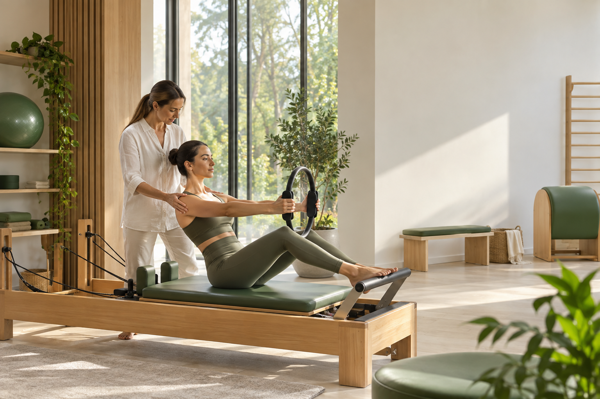

Rua Anita Garibaldi, 293, Joinville.
Anita Garibaldi · Joinville
Movimento para recuperar confiança no corpo.
Pilates e fisioterapia em uma unidade dedicada a acompanhar sua evolução com técnica, presença e continuidade.

Sobre a unidade
Cuidado individual para voltar a se mover melhor.
A unidade Anita Garibaldi reúne Pilates e fisioterapia em Joinville, conectando prevenção, reabilitação e qualidade de movimento.
Cada jornada começa pela necessidade real da pessoa e segue com orientação profissional e evolução progressiva.
Presença local
Informações claras para planejar sua visita.
Endereço, contato e horários foram confirmados nas fontes oficiais e no Google Business.
De segunda a sexta, com disponibilidade consultada.
Agendamento direto com a unidade.
Serviços
Duas frentes, um cuidado conectado.
A indicação depende da avaliação e dos objetivos de cada pessoa.
Controle e força
Pilates
Prática orientada para mobilidade, estabilidade, consciência corporal e fortalecimento progressivo.
Reabilitação
Fisioterapia
Acompanhamento para recuperar função, reduzir limitações e retomar atividades com segurança.
Abordagem Lótus
Movimento com intenção em cada fase.
O percurso respeita o momento atual, organiza prioridades e acompanha a evolução sem atalhos.
Escuta e avaliação para reconhecer necessidades e objetivos.
Escolha da prática e dos estímulos adequados.
Acompanhamento consistente para construir autonomia.
01Escuta
Entender o momento atual e os objetivos de cada pessoa.
02Orientação
Organizar estímulos possíveis para a rotina.
03Continuidade
Acompanhar a evolução com presença e consistência.
Pilates e fisioterapia
O cuidado continua entre uma sessão e a próxima.
Orientação, consistência e atenção ao corpo ajudam a transformar movimento em confiança para a rotina.
- Atendimento com agenda
- Prática adequada ao momento de cada pessoa
- Contato direto com a unidade
Depoimentos de clientes
Experiências compartilhadas com a Lótus.
Avaliações públicas de pessoas que passaram pelo espaço.
“Atendimento excelente, profissionais muito capacitados e atenciosos.”
“Um lugar acolhedor, com profissionais comprometidos com a evolução de cada aluno.”
“Instrutoras sempre muito atenciosas e disponíveis. Aulas conforme a necessidade.”
“O espaço é muito agradável, aparelhos novos e aulas personalizadas.”
“A minha experiência com a Lótus Pilates é a melhor possível.”
“Amo fazer Pilates, minha professora é super prestativa e dedicada.”
“Excelentes profissionais, local seguro, agradável, limpo e super organizado.”
Dúvidas frequentes
Planeje seu primeiro contato.
Quais serviços são oferecidos?
Pilates e fisioterapia.
Qual é o horário publicado?
Segunda a sexta, das 6h às 21h. Confirme a agenda pelo WhatsApp.
Onde fica a unidade?
Rua Anita Garibaldi, 293, Joinville, Santa Catarina.
Como agendar?
Entre em contato pelo WhatsApp +55 47 99289-7343.
Contato
Seu próximo movimento começa aqui.
Converse com a unidade Anita Garibaldi e consulte a melhor disponibilidade.
- Endereço
- Rua Anita Garibaldi, 293, Joinville - SC
- +55 47 99289-7343
- @lotusfisiopilatesjlle
- Horários
- Segunda a sexta, 6h–21h